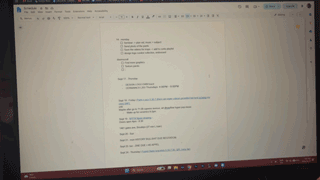
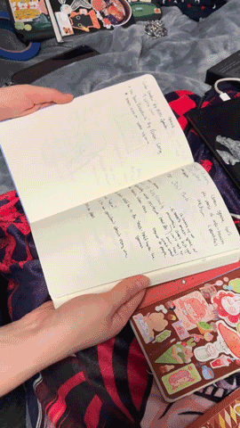
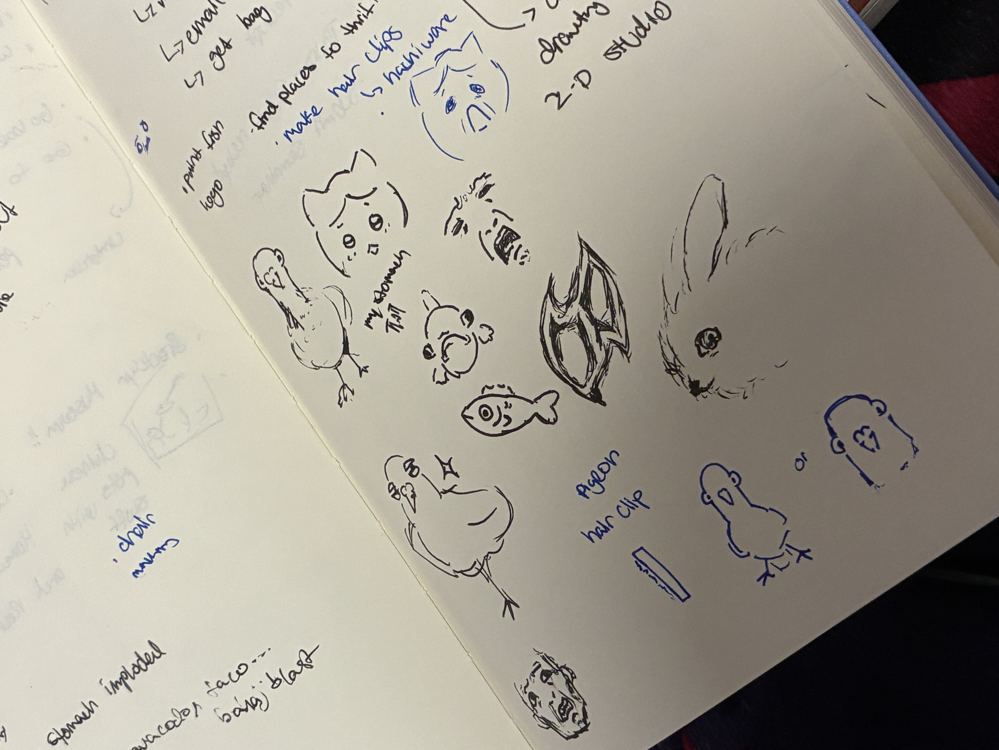

i use google docs and google calendar, as well as three different sketchbooks.

i like to organize and write my schedule down manually - so i would map out the date and organize it like a calendar on my document. i also just like google docs.
it became a habit from the start of high school. i title each of the documents i make as just "schedule" - sometimes i mispell it or write it in different variations - and i would delete the tasks after the day is done.
i change the document based on feeling or if i cannot find it anymore, then i would start a new one.

the three sketchbooks that all have schedules and tasks written in them, they should all probably be in the same one sketchbook but you know.
i don't like the regular planers because i feel like there is not enough space as i like to draw, write, and note down my ideas. i also just own a lot of sketchbooks.
to me, journals and sketchbooks are also better for planning as i need a lot of space - the same sentiment for google docs, as well as the fact that it can be deleted after done.
customization and personalization is also a big priority for me when it comes to what i use to plan - i think things spontaneously which require a large amount of space..
sketchbooks are useful for brainstorming, art studies, and whatever floats my boat at the moment.

i tend to micromanage my entire day and then proceed to not follow it at all. i would put my tasks and assignments onto the google document, and i like how convenient it is.
i like the fact that i can write on the google document anywhere and everywhere - it's accessible across multiple devices, as i can use a friend's laptop to sign in to write on it. i just need it to be accessible everywhere.
it's also the fact that you can customize it, and i want to be able to freely do so. there's a lot of space on a google document as well.
sometimes i use the google document to procrastinate or to find busy work while in lectures, and i also have really bad memory so it's useful to put reminders on a google document.
i also message myself reminders on discord, or write some notes on the whiteboard hanging on my door.